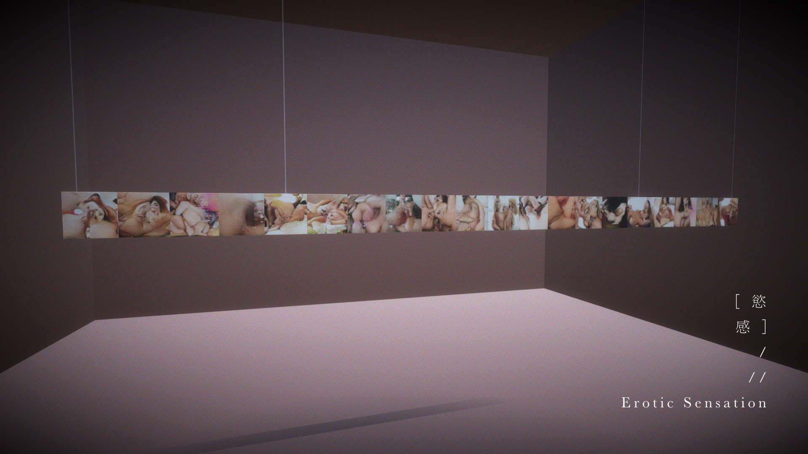
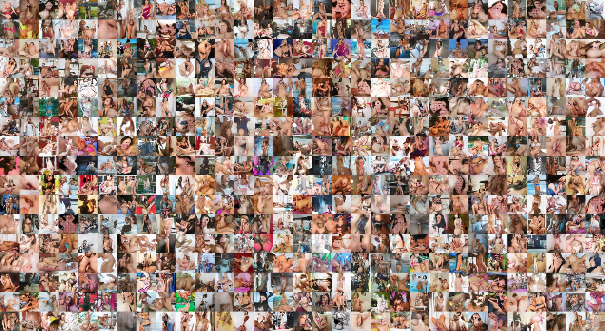
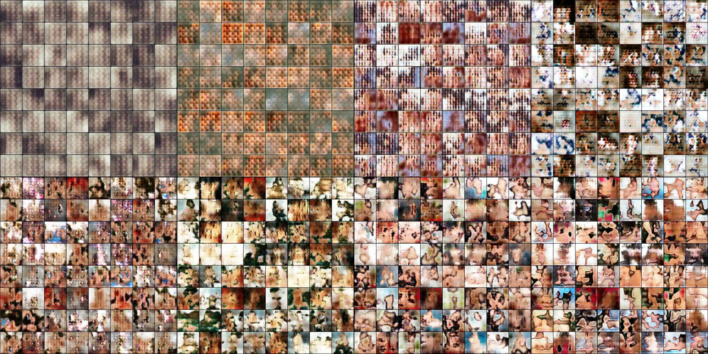

The Poor Image
GAN Training
Digital Aesthetics
AI & Desire
Double-Sided Projection
Erotic Sensation critiques the dominance of hyper-real, high-resolution aesthetics in digital imagery and AI vision. Drawing on Hito Steyerl’s notion of the “poor image,” the project reframes machine-generated artifacts as algorithmically produced weak images—formed not by compression or circulation but by the decomposition of convolutional layers. These processes strip detail and reconstruct flesh-toned abstractions that reflect computational logic rather than representational fidelity.
The work asks: Why do viewers perceive erotic tension in images without explicit bodies? Is desire latent within the training dataset, or projected by the viewer’s embodied gaze? By contrasting AI-generated weak images with their heterogeneous source material, the installation reveals how erotic charge emerges in the space between algorithmic reduction and human interpretation—where absence invites projection, and meaning forms through co-production between machine and viewer.
The installation uses a deep-learning generator trained on a diverse dataset of human-related imagery. Through convolutional filtering, the model produces low-resolution, pulsating forms—ambiguous patches of skin-like color that hover between abstraction and bodily suggestion.
A double-sided projection reveals both systems: Side A: machine-generated weak images, infinitely evolving; Side B: the raw dataset, shown without domain filtering to preserve diversity.
Juxtaposing algorithmic output with its training source exposes the perceptual gap between what AI reconstructs and what humans perceive. The work highlights how viewers supply meaning—particularly eroticism—within the ambiguity of weak images, where machine reduction and human desire co-produce the final experience.
 